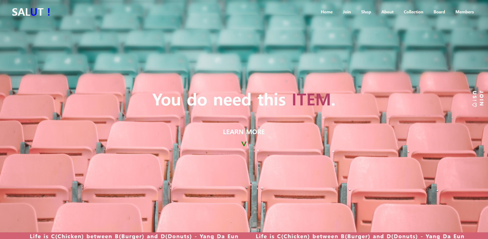

쇼핑몰 사이트 SALUT! 제작
개요
쇼핑몰에 관심이 있어, 수업 중에 배운 HTML과 CSS를 이용해서 싱글 페이지를 제작해보았습니다. 개발기간은 약 2일 소요되었고,
HTML과 CSS, JavaScript를 사용해 동적인 페이지를 구현하고자 했습니다.
경험 정리
• Semantic UI를 기초로 HTML 레이아웃을 구성했고, 수업시간에 배운 Flex와 Grid를 중점으로 CSS를 작성했습니다. 미디어 쿼리를 사용하지 못한 점이 프로젝트의 보완점입니다.
• 다음엔 동적인 웹페이지를 만들고 싶습니다. jQuery를 좀 더 공부해서 페이지 분할등 더 다양한 기능을 구현하고 싶습니다.
※ 해당 싱글 페이지는 SALUT! 과 싱글페이지 깃허브로 보기에서 확인이 가능합니다.
Technologies:
- - HTML5
- - CSS5
- - JavaScript
- - VSCode